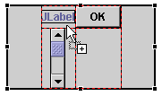

When you use the Swing GridBag layout, the visual editor sets default constraints on components. You can change these constraints using the Properties view or the Customize Layout dialog.
Constraints, such as fill, anchor, weight x, and weight y, are set based on the component type in order to display the component better on a GridBagLayout. For example, when you drop a javax.swing.JTextField, the fill is set to HORIZONTAL (default value for JTextField is NONE), and the weight x value is set to 1 (default for JTextField value is 0). Otherwise, the JTextField would be barely visible.
In the example below, the JScrollBar was dropped with a fill value set to VERTICAL and the weight y value set to 1.

The generated constraint for a new component instantiates GridBagConstraints using its null constructor.
When switching to a GridBagLayout from another layout manager, the visual editor for Java will generate constraints for each component based on their existing bounds, and the net effect will be that the components do not move their position. Instead of being placed there by an absolute rectangle such as a container with a layout set to null, they have GridBagConstraints.
The advantage of using GridBagConstraints instead of a null layout is that each component is sized according to its preferred size. So, if the size of the parent window changes or if the preferred sizes change at runtime due to different language strings, the layout manager will resize and reposition all of the components and make the best use of the available space.
To specify anchor, fill, and inset constraints for a component in GridBag layout:
- Select the component that is in a GridBag layout that you want
to adjust. Tip: Select multiple components to set identical anchor, fill, and inset constraints on multiple components at the same time.
- Do one of the following to open the Customize Layout window:
- Right-click and select Customize Layout from the pop-up menu.
- Click the Customize Layout
 toolbar button.
toolbar button.

- Go to the Component page of the Customize Layout window.
- To adjust the anchor position of the component, click one of the
compass buttons:
- Anchor northwest - positions the component in the upper-left corner of the grid cell.
- Anchor north - positions the component in the top center of the grid cell.
- Anchor northeast - positions the component in the upper-right corner of the grid cell.
- Anchor west - positions the component in the left middle of the grid cell.
- Anchor center - positions the component in the center of the grid cell.
- Anchor east - positions the component in the right middle of the grid cell.
- Anchor southwest - positions the component in the lower-left corner of the grid cell.
- Anchor south - positions the component in the bottom center of the grid cell.
- Anchor southeast - positions the component in the lower-right corner of the grid cell.
- To adjust how much the component fills the grid cell, click either
or both of the fill buttons:
- Fill horizontal - specifies that the component should occupy the full width of the grid cell.
- Fill vertical - specifies that the component should occupy the full height of the grid cell.
- To adjust the padding between the grid cell border and the component,
set a value (in pixels) for any of the following fields:
- Top - sets the inset, or padding, above the component.
- Left - sets the inset, or padding, to the left of the component.
- Bottom - sets the inset, or padding, below the component.
- Right - sets the inset, or padding, to the right of the component.
- To change other properties for a component in a GridBag (for example, weight x, weight y, x internal padding, and y internal padding), you can expand the constraint property for the component in the Properties view.